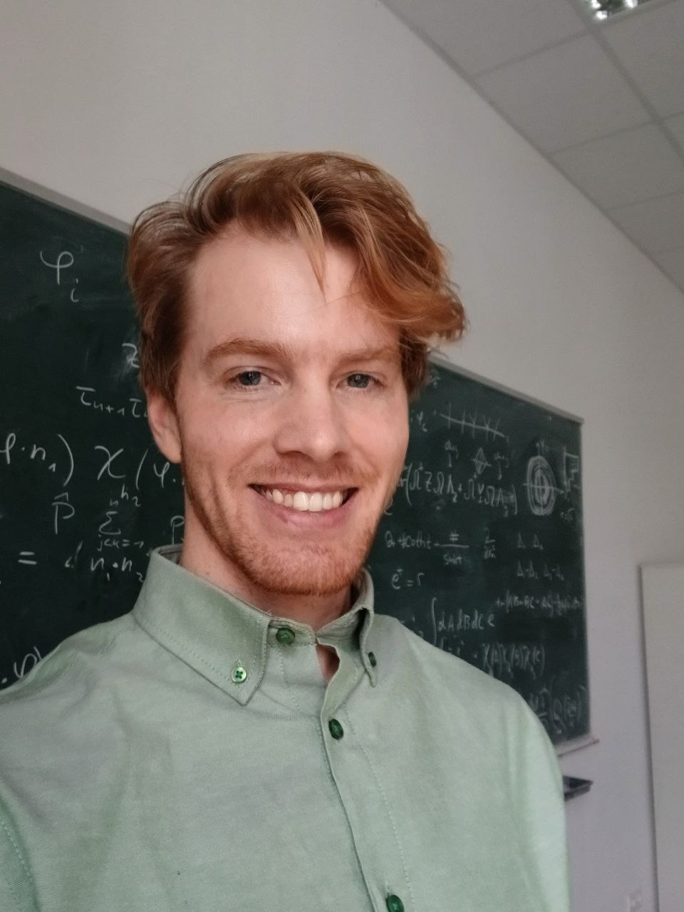

Theoretical physics
Scattering amplitudes
and long-range forces
I study how causality and unitarity constrain scattering in theories with long-range forces. I have developed infrared-finite methods and tested their consequences in exactly solvable models, and I am extending this work to fully dynamical quantum field theories. With collaborators, I also study the analytic structure of Feynman integrals and develop methods for multi-loop amplitudes.
Postdoctoral Researcher
Higgs Centre · University of Edinburgh

Selected papers
All publications and preprints →-
2026
Unitarity and the Forward Direction in Theories with Long-Range Forces
Unitarity bounds without an arbitrary infrared scale, established in a solvable nonrelativistic model.
-
2026
New Tools in the Landau Bootstrap
New constraints on Feynman-integral discontinuities, valid to all orders in dimensional regularization, as input to the Landau bootstrap.
-
2025
Steinmann Violation and Minimal Cuts
Predicting Steinmann-relation violations from minimal cuts, with checks in two-loop five-particle integrals.
-
2025
Analytic Properties of Infrared-Finite Amplitudes in Theories with Long-Range Forces
Modified LSZ reduction and an optical theorem for scattering in a fixed Coulomb background.
-
2024
Minimal Cuts and Genealogical Constraints on Feynman Integrals
Constraints on sequential discontinuities that go beyond the extended Steinmann relations.
Recorded talks →
Presentations at CERN and QCD Meets Gravity on two strands of my research.
Academic community →
Workshop and seminar organisation, and research supervision at Edinburgh.